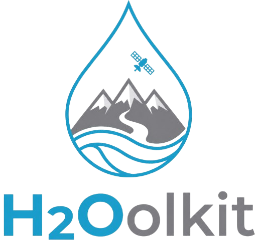

Spring Source Detection
Carpathian Arc · Copernicus Sentinel-1 & Sentinel-2 · Real-time OSM + EU-Hydro
25 Apr 2026
Satellite Detection Map — Romania
● Live
Spring Source Detection
Carpathian Arc · Romania — search for a village or city to explore nearby water sources
Water Sources
Overview